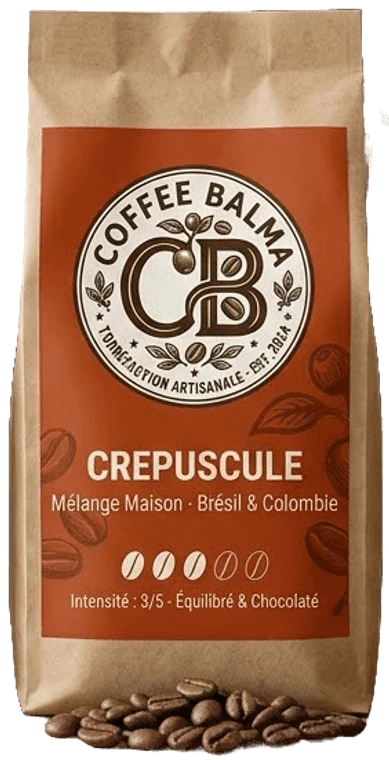
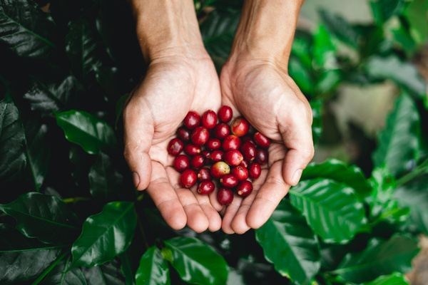
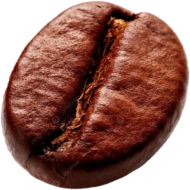

Soleil Levant
Notes de agrumes, de miel et de fleur blanche.
Un café qui pétille. Pour les matins calmes et le filtre lent.
Clair
9,90 €les 250 g
Soit 39,60 € le kilo
Du café en grains, torréfié à Balma par fournées de 6 kg. Un sachet par mois, sans engagement.
Marque, prix et atelier fictifs : démonstration.
Inès Calmette a ouvert l'atelier de Balma en 2024. Elle torréfie seule, sur un tambour qui ne contient pas plus de six kilos.
Le tambour chauffe, Inès écoute, regarde, goûte. Avec six kilos, elle corrige la chaleur à la minute. Un grain brûlé ne se cache pas dans un sac de soixante.
Un clair, un moyen, un foncé. Chacun vient d'une ferme que l'atelier a goûtée avant d'acheter. Vous ne choisissez plus parmi trente références.
Chaque commande part de l'atelier dans les deux jours. Le café n'attend pas dans un entrepôt. Il arrive en grains, dans un sachet kraft.
Image d'illustration. Chiffre d'ordre de grandeur couramment cité dans la littérature sur le café.
9,90 € les 250 g, quel que soit le café. Ouvrez une fiche pour tout savoir.
Notes de agrumes, de miel et de fleur blanche.
Un café qui pétille. Pour les matins calmes et le filtre lent.

Notes de caramel, de noisette et de chocolat au lait.
Le café rond, celui qui plaît à tout le monde, avec ou sans lait.

Notes de cacao noir, d'épices et de fruits secs grillés.
Dense, long en bouche. Pour l'espresso et le café au lait.
Trois gestes, un café frais chaque mois. Vous gardez la main : changez de café, mettez en pause, arrêtez, quand vous voulez.
Un, deux ou quatre sachets par mois, un seul café ou un mélange des trois. Le carton se remplit sous vos yeux.
Votre fournée sort du tambour dans la semaine. Elle repose quelques jours, puis part sous 48 h, jamais d'un stock qui dort.
La boîte arrive dans votre boîte aux lettres. L'étiquette porte votre prénom, la date de torréfaction et la recette conseillée.
1, 2 ou 4 sachets par mois. Sans engagement, résiliable avant chaque envoi.
Avis d'exemple. Les trois personnes ci-dessous sont fictives.
« Je pensais ne pas aimer le café filtre. Avec Soleil Levant, j'ai senti l'orange avant de boire. Je suis revenue pour le deuxième sachet. »
« Il tient face au lait sans devenir plat. Je règle ma machine à 18 g, comme sur la fiche, et ça sort bien du premier coup. »
« J'ai pris deux sachets, un Crépuscule et un Soleil Levant. Plus de rayon à regarder, plus de doute au moment d'acheter. »

Le café est d'abord un fruit. On le cueille rouge, à la main, entre 1 100 et 2 200 mètres d'altitude. Chaque cerise cache deux grains.

Séché, trié, mis en sac. Le grain vert arrive à Balma dur, sans odeur de café. Tout reste à faire.

Six kilos dans le tambour. Le grain sèche, brunit, puis craque. Inès sort la fournée au bon moment, pas une seconde après.
À la sortie du tambour, le grain dégaze. On le laisse reposer avant de l'ensacher : trop frais, il mousse et l'infusion devient irrégulière.

Moulu à la dernière minute, infusé à 93 °C. Ce que vous buvez était un fruit il y a quelques semaines.
Les sachets, la boîte et l'atelier, tirés comme des polaroïds. Faites glisser, ou utilisez les flèches.
Choisissez ce que vous aimez sentir. La roue compte les notes de chaque café.
Quatre questions. Un ticket avec votre café, votre mouture et votre recette.
Trois fermes, trois continents. Touchez une origine pour suivre le sac jusqu'à Balma.
Fond de carte : Natural Earth, domaine public (frontières simplifiées). Distances à vol d'oiseau, délais indicatifs. Fermes et lots fictifs.
Choisissez un café, une méthode, une dose. Le comptoir calcule et lance l'extraction.
Démo accélérée ×8.
Oui. L'abonnement est sans engagement. Vous pouvez le suspendre ou l'arrêter avant le prochain envoi, sans frais.
Chaque commande part de l'atelier de Balma sous 48 h. Les fournées sont de 6 kg : le café ne dort pas en stock.
Non, seulement des grains. Un café moulu perd ses arômes en quelques minutes. Le comptoir de préparation, plus haut, vous donne la mouture adaptée à votre matériel.
Non. Elle est offerte (condition fictive de démonstration), quelle que soit la formule. Votre boîte arrive dans la boîte aux lettres.
Fermé, le café est à son meilleur dans les six semaines qui suivent la torréfaction. Gardez-le au sec, à l'abri de la lumière, dans son sachet bien refermé.
Oui. Vous recomposez votre boîte avant chaque envoi : un seul café, ou un mélange des trois. Rappel : ce site est une démonstration, aucune commande n'est réelle.
Atelier-boutique fictif, à Balma. Venez sentir la fournée du jour et repartir avec un sachet.
Pas de réservation : poussez la porte.